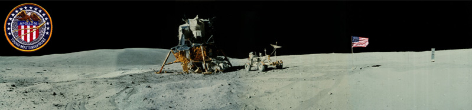
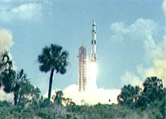

Apollo 16

Launched on April 16, 1972, Apollo 16, was successful even though there was a malfunction of part of the control equipment which shortened the stay to three days from the intended four-day mission. There were three lunar EVAs plus one deep space EVA. Its mission was to investigate the lunar surface in the Descartes highlands area. This was the only mission to target the lunar highlands. |  |
The Apollo 16 astronauts were John W. Young, Thomas K. Mattingly II, and Charles M. Duke, Jr.
The images and text are extracted from the NASA sites, which may be consulted for more details.
Online references:
NASA's Apollo Program site
Apollo 16 Mission
|
Index
Solar System Illustration
Solar System Concepts
Apollo Program |